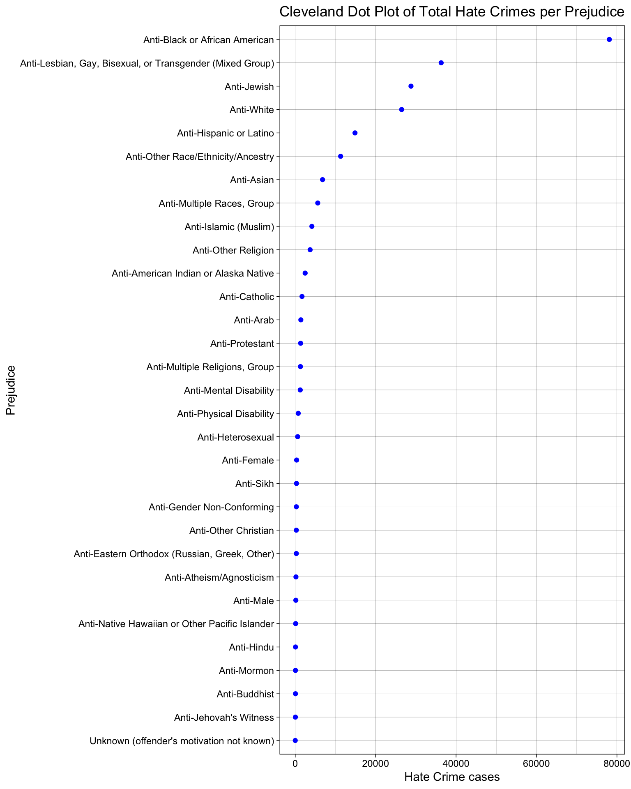
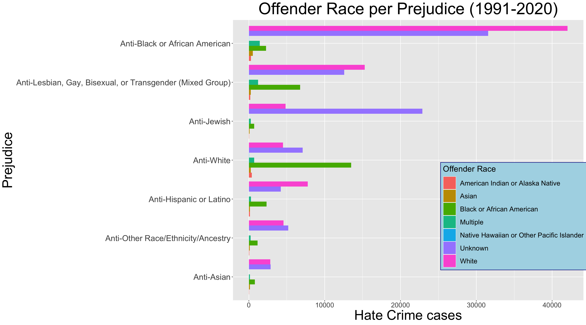
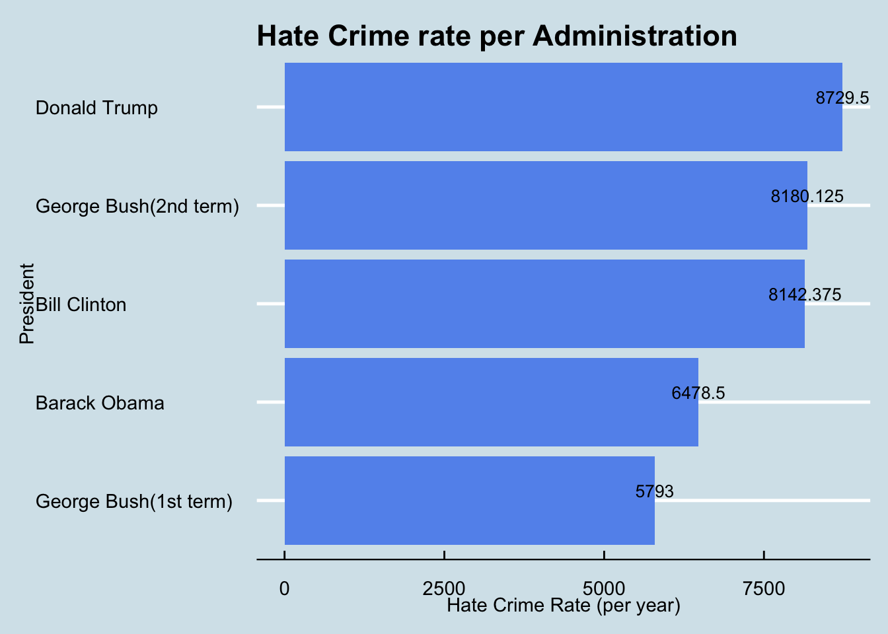
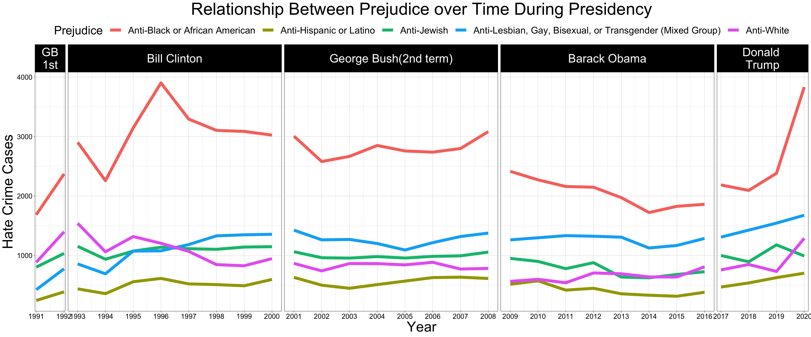

Chapter 4 Results
4.1 Trends of hate crime
The following shows the trend chart of the total number of reported hate crime cases with each year. As can be seen from the figure, hate crime case increased most sharply in 1991-1992, 1994-1995, 2000-2001 and 2019-2020. Conversely, from 1993-1994, 2001-2002, 2008-2009, 2012-2013, the decline was the most dramatic.
From 2001 to 2014, the total number of hate crime cases showed a general trend of decline. However, from 2014 to 2020, the total number of hate crime cases in the United States increased dramatically.
In the whole chart, 1991 had the lowest total number of hate crime cases. 2020 has the highest total number of hate crime cases.
We know that the year has something to do with how long a U.S. president has been in office, Based on this picture, we will answer the question of which presidential administration had the highest or lowest hate crime incidents in the third subsection.
4.2 Which groups of people were attacked the most?
The plot shows the number of total hate crimes for each prejudice. As can be seen from the Cleveland dot chart, black or African Americans are the groups most attacked by hate crime(almost 70,000 reported incidents). Asians, however, were the seventh most attacked group(over 7,000 reported incidents). Please note that our graph here only shows the total number of incidents involving people who have been attacked over the last 20 years, as opposed to which group is most vulnerable. We will take the results of the graph to analyse the relationship between the total number of people attacked in different categories under different presidents.

4.3 The relationship between the race of the attacker and the race of the attacked.
The following graph shows the relationship between the race of the attacker and the race of the attacked. Note we will ignore the unknown offender race in this case. We found that when Black or African american people were attacked, white people attacked them the most, by a significant margin. We also found that whites were the most aggressive toward all groups except toward Jewish. The majority of Anti-White hate crimes were committed by Black people and White people.

4.4 Which presidential administration had the highest or lowest hate crime rate?
Because each U.S. president has a different number of years in office, it would be unfair to compare total hate crime cases here. So we divided the number of hate crime cases during each president’s tenure by the number of years in office to get the hate crime rate for each president. We found that Donald Trump had the highest hate prime rate and George Bush(1st term) had the lowest. But the difference between the three presidents with the highest rates is not obvious.

At the same time, we can also draw a trend chart of the changing relationship of prejudice over time during the tenure of different presidents. We found an increase in all kinds of prejudice during the first George Bush administration. During the period of Bill Clinton, the general trend of anti Black or African american was up, while the general trend of anti White was down. All kinds of prejudice in the second George Bush years were in a lull (neither rising nor falling). The overall trend of anti-Black or African american decline under Barack Obama administration is different from any other period. While anti-Black or African american trends have risen sharply under Donald Trump years, other kinds of prejudice have crept up.

4.5 Which groups of people have the highest hate crime cases?
Note here we ignore the unknown case since it tells nothing. Through this pie chart, we can find that 70.7 percent of all reported hate crime cases were committed by White people, which is nearly 45% higher than the black or African American group that ranks second. We can find that Asians are less likely to be offenders.